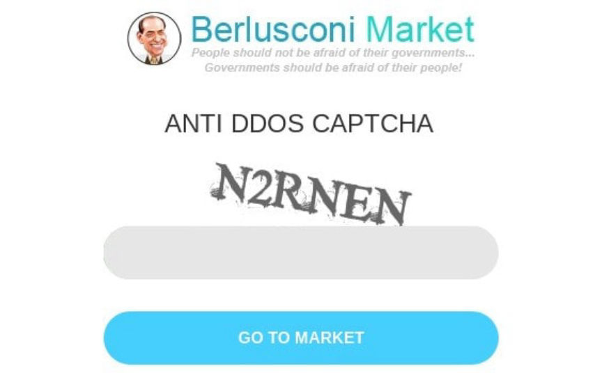
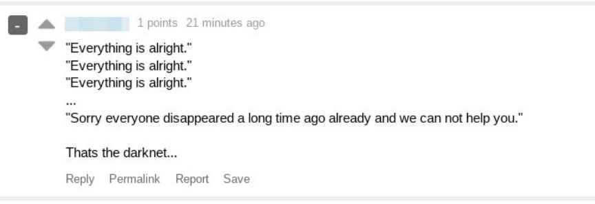
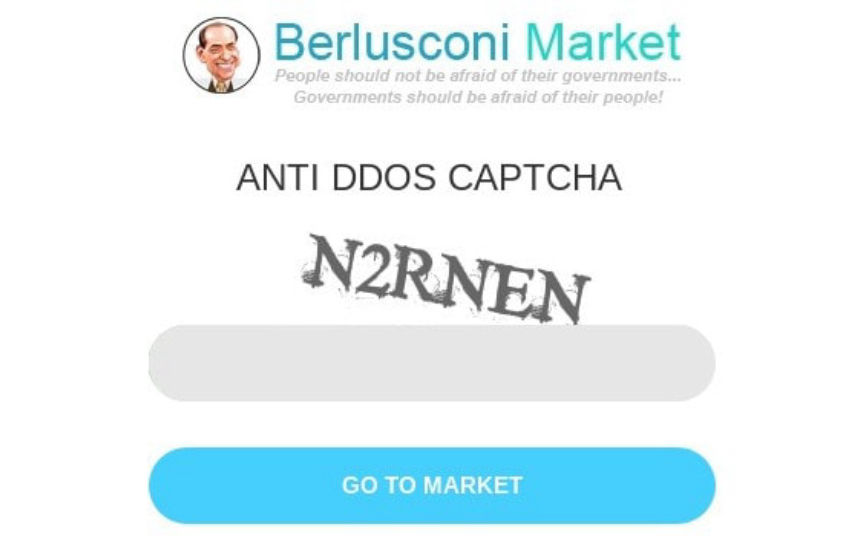
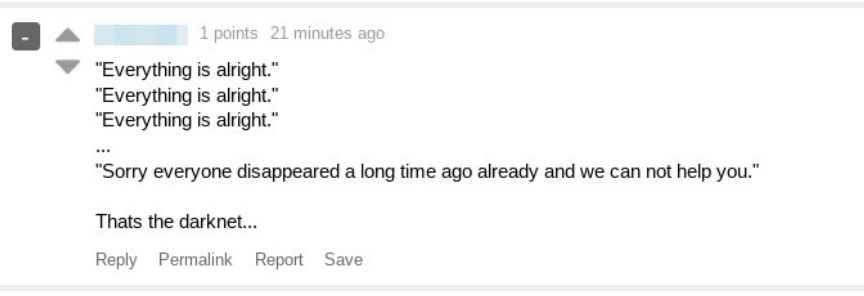

Berlusconi Admins Disappeared Two Weeks Ago
~3 min read | Published on 2019-10-04, tagged Darkweb-Market, admin using 543 words.
A Berlusconi Market moderator revealed that Berlusconi administrators had disappeared nearly two weeks ago, leaving the rest of the staff without access to the server or the administrative functions needed to fix a bug preventing users from actually logging into the market.
Update: Unconfirmed sources have claimed that the market was seized on September 22.
Hundreds of people have recently complained about a bug on Berlusconi Market that is currently preventing any access to the market. The market requires users to solve a captcha before entering in their login details. For the past few days, users have been unable to get through the captcha to access their accounts on the market. After correctly solving the captcha, users are redirected to the same captcha page as if they has incorrectly solved the captcha.
The market has had captcha problems in the past but they usually disappeared within a day. The Chief Moderator of Berlusconi Market, Emmanuel Macron, posted on Dread that while they do have a problem with the captcha, “the real problem is that our Admins disappeared two weeks ago.” A source told darknetlive that one of the administrators had contacted him approximately five days prior to vanishing. According to the source, the admin (Putin) had lost access to his PGP key and jabber account. The claims are unconfirmed by darknetlive but the source was in regular communication with the admins before they disappeared.
Emmanuel Macron’s post on Dread:
“We don’t have access to the server, so we can’t fix the [captcha] problems. The funds should be on the market so I don’t think to an exit scam but the result is the same. We’re trying to hack the captcha so we can get over it and the users can withdraw their funds but it’s not easy. We don’t know what happened to our Admins. They may have been arrested, dead or anything else. We hope to see them in the next days but every day that passes they are unlikely to return. Anyway we will keep you posted.”
This will most likely result in another round of wild speculation as to what happened to the administrators of the market. A two week absence is enough of a reason to suspect that the admins had either exit scammed or landed in police custody for crimes likely related to the operation of Berlusconi Market.
The signed message is below.-----BEGIN PGP SIGNED MESSAGE-----Hash: SHA512As you surely know, at the moment we have a problem with the captcha. The real problem is that our Admins are disappeared two weeks ago (before of this problem) and we don't have access to the server, so we can't fix the problems. The funds should be on the market so I don't think to an exit scam but the result is the same. We're trying to hack the captcha so we can get over it and the users can withdraw their funds but it's not easy. We don't know what happened to our Admins. They may have been arrested, dead or anything else. We hope to see them in the next days but every day that passes they are unlikely to return. Anyway we will keep you posted. Best Regards Emmanuel Macron, Berlusconi Market Chief Moderator-----BEGIN PGP SIGNATURE-----iQEzBAEBCgAdFiEECOcRAX3MFBQ+CTLxGsjHCgLRgPAFAl2XmGkACgkQGsjHCgLRgPBvSwgAiYSqoqA0Lk8iNvRETEGIsZ+MfSFGyvvEEoYnR7uqOXbmHHAmA/f8dw0qUNDWDQYralbJqLFfP+N70DPnqtzW9Mos/ip+PWTbWM7MiIxNVPKdoB4pY0QmJLCxn+/rcagEpdga5pFZ0TFF+8IhId2YZsWe+400mjEQsbzheRNJE/GcPLj3DftcCA9TtyOXEq6GedJ5pGA2wgUFTAx+lNzIzxA9ud+8Z7frGrgNl48aG2j9OwFQfGD1cbziKAEu3i0VvWBWQ4ULmmAU10h5lF8YuhIVbttBJojsl4pEiQOr6M0TQzWQjppFY6vKdWaKMMtB1EGVnO1diEV6RgpxuYSknQ===qbRy-----END PGP SIGNATURE-----
Update: Unconfirmed sources have claimed that the market was seized on September 22.
Hundreds of people have recently complained about a bug on Berlusconi Market that is currently preventing any access to the market. The market requires users to solve a captcha before entering in their login details. For the past few days, users have been unable to get through the captcha to access their accounts on the market. After correctly solving the captcha, users are redirected to the same captcha page as if they has incorrectly solved the captcha.
The Berlusconi Market DDOS Captcha
The market has had captcha problems in the past but they usually disappeared within a day. The Chief Moderator of Berlusconi Market, Emmanuel Macron, posted on Dread that while they do have a problem with the captcha, “the real problem is that our Admins disappeared two weeks ago.” A source told darknetlive that one of the administrators had contacted him approximately five days prior to vanishing. According to the source, the admin (Putin) had lost access to his PGP key and jabber account. The claims are unconfirmed by darknetlive but the source was in regular communication with the admins before they disappeared.
Emmanuel Macron’s post on Dread:
“We don’t have access to the server, so we can’t fix the [captcha] problems. The funds should be on the market so I don’t think to an exit scam but the result is the same. We’re trying to hack the captcha so we can get over it and the users can withdraw their funds but it’s not easy. We don’t know what happened to our Admins. They may have been arrested, dead or anything else. We hope to see them in the next days but every day that passes they are unlikely to return. Anyway we will keep you posted.”
A Very Familiar Pattern
This will most likely result in another round of wild speculation as to what happened to the administrators of the market. A two week absence is enough of a reason to suspect that the admins had either exit scammed or landed in police custody for crimes likely related to the operation of Berlusconi Market.
The signed message is below.-----BEGIN PGP SIGNED MESSAGE-----Hash: SHA512As you surely know, at the moment we have a problem with the captcha. The real problem is that our Admins are disappeared two weeks ago (before of this problem) and we don't have access to the server, so we can't fix the problems. The funds should be on the market so I don't think to an exit scam but the result is the same. We're trying to hack the captcha so we can get over it and the users can withdraw their funds but it's not easy. We don't know what happened to our Admins. They may have been arrested, dead or anything else. We hope to see them in the next days but every day that passes they are unlikely to return. Anyway we will keep you posted. Best Regards Emmanuel Macron, Berlusconi Market Chief Moderator-----BEGIN PGP SIGNATURE-----iQEzBAEBCgAdFiEECOcRAX3MFBQ+CTLxGsjHCgLRgPAFAl2XmGkACgkQGsjHCgLRgPBvSwgAiYSqoqA0Lk8iNvRETEGIsZ+MfSFGyvvEEoYnR7uqOXbmHHAmA/f8dw0qUNDWDQYralbJqLFfP+N70DPnqtzW9Mos/ip+PWTbWM7MiIxNVPKdoB4pY0QmJLCxn+/rcagEpdga5pFZ0TFF+8IhId2YZsWe+400mjEQsbzheRNJE/GcPLj3DftcCA9TtyOXEq6GedJ5pGA2wgUFTAx+lNzIzxA9ud+8Z7frGrgNl48aG2j9OwFQfGD1cbziKAEu3i0VvWBWQ4ULmmAU10h5lF8YuhIVbttBJojsl4pEiQOr6M0TQzWQjppFY6vKdWaKMMtB1EGVnO1diEV6RgpxuYSknQ===qbRy-----END PGP SIGNATURE-----